Quantitative Reasoning
1015SCG
Lecture 3
Errors
Errors
Every measurement comes with an error:
- Have an idea of how large your error is;
- Design the experiments to minimize the errors;
- Report errors.
Types of Errors
Measurement errors:
-
Random – uncontrolled fluctuations in the measurement
- usually, precision of the apparatus or technique related
-
Systematic – biased, often one sided
- poor experiment design/technique or not calibrating the equipment
Sampling error:
-
Small sample size or poor sampling
- e.g. sample too small or not diverse enough to be representative of the population
Experiment
|
Two groups of student are sliding the block down the incline. They are measuring the time it takes the block to slide on the smooth surface. Group 1 – uses stopwatch to measure time Group 2 – uses fancy photogate Each group repeats the measurement 6 times. |
|
Experiment: Data
|
Two groups of student are sliding the block down the incline. They are measuring the time it takes the block to slide on the smooth surface. Group 1 – uses stopwatch to measure time Group 2 – uses fancy photogate Each group repeats the measurement 6 times. |
|
Experiment: Scatter plot
|
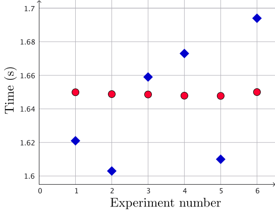 |
Average from repeated measurements
Average is defined as
\(\mu=\) \(\bar{x} = \dfrac{x_1 + x_2 + \cdots + x_n}{n}\) \(=\ds \frac{1}{n} \sum_{i=1}^{n}x_i\)
\(n\) - number of experiments
\(x_i\) - result of the experiment number \(i,\) where $i = 1, 2, \ldots, n$
Note: It is also known as the mean or best estimate
Experiment: Average
|
Find the average \(\bar{x}=\dfrac{1}{6}\ds \sum_{i=1}^{6}x_i\) |
|
Experiment: Average
|
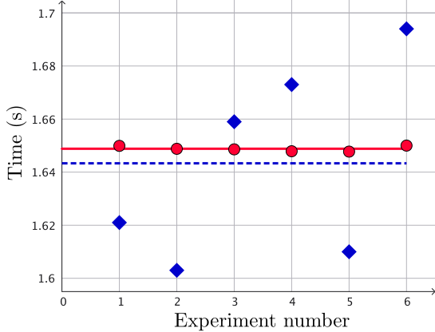 |
Experiment: Variability with respect the average
|
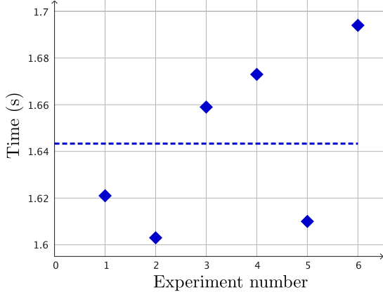 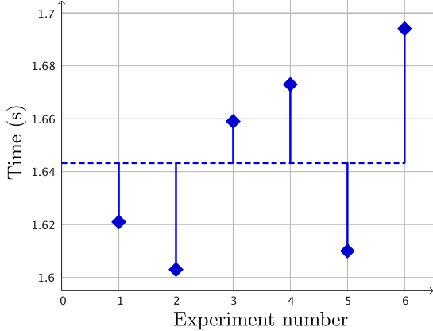 How far is $x_i$ from the average? |
Variance and Standard Deviation
|
For a data set of \(n\) observations, the sample variance is: \(\ds \sigma^2 = \frac{\left(x_1-\bar{x}\right)^2+ \left(x_2-\bar{x}\right)^2+\cdots + \left(x_n-\bar{x}\right)^2}{n-1}\) \(\ds =\frac{1}{n-1}\sum_{i=1}^{n}\left(x_i-\bar{x}\right)^2\qquad \qquad \qquad \) The sample standard deviation (SD) is its square root: \(\sigma = \ds \sqrt{\frac{1}{n-1}\sum_{i=1}^{n}\left(x_i-\bar{x}\right)^2}\) |
FAQ: Why \(n-1\)? 🤔 Because "SD" is shift-invariant so you lose one "degree of freedom" (or data point). Also, you can't have the SD of only one data point! |
Experiment: SD
|
Find the SD \( \sigma = \ds \sqrt{\frac{1}{n-1}\sum_{i=1}^{n}\left(x_i-\bar{x}\right)^2} \) |
|
Experiment: SD
|
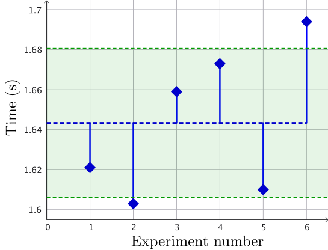 How far is $x_i$ from the average? |
Experiment: SD
|
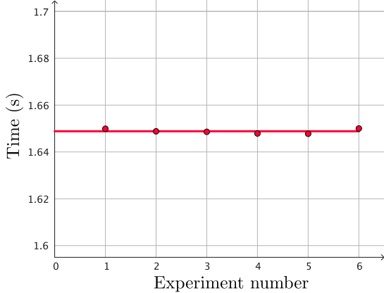 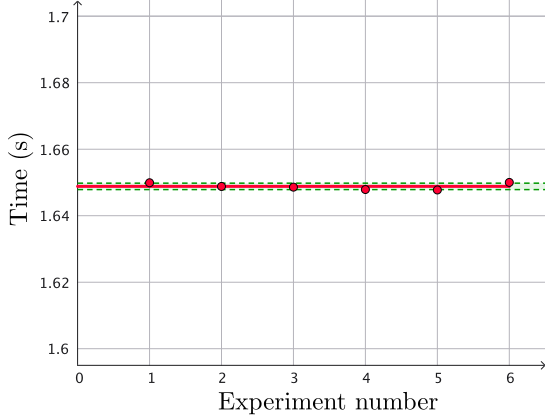 How far is $x_i$ from the average? |
Standard Error
For a data set of $n$ observations, the Standard Error of the sample average is
\(\text{SE} = \) \(\sigma_{\bar{x}}= \ds \frac{\sigma}{\sqrt{n}}\qquad\)
that is, it is the standard deviation divided by square root of sample size.
Experiment: Standard Error
| A | B | C | |
| 1 | Group 1 | Group 2 | |
| 2 | Trial | time (s) | time (s) |
| 3 | 1 | 1.621 | 1.649906 |
| \(\vdots\) | \(\vdots\) | \(\vdots\) | \(\vdots\) |
| 8 | 6 | 1.694 | 1.650007 |
| 9 | Average | =AVERAGE(B3:B8) | =AVERAGE(C3:C8) |
| 10 | SD | =STDEV(B3:B8) | =STDEV(C3:C8) |
| 11 | SE | =STDEV(B3:B8)/SQRT(COUNT((B3:B8))) | =STDEV(C3:C8)/SQRT(COUNT((C3:C8))) |
Find the standard error of the sample average
SE = \( \sigma_{\bar{x}}= \ds \frac{\sigma}{\sqrt{n}}\)
Experiment: Standard Error
|
For Group 1, the average and standard error are \(\bar{x} = 1.643333\,\) and \(\,\Delta x = 0.015198,\) respectively. Thus, the interval around the mean that indicates the precision of the estimate is \( x = 1.643333 \pm 0.015198 \, \text{s}\) For Group 2, the interval is \( x = 1.648820 \pm 0.000395 \, \text{s}\) |
How can we present these values?
Group 1: \(\, x = 1.643333 \pm 0.015198 \, \text{s}\)
Group 2: \(\, x = 1.648820 \pm 0.000395 \, \text{s}\)

🔢 Significant Figures
Significant figures are the digits in a number that carry meaning about its precision. They include all certain digits plus the first uncertain digit.
- 123.45 → 5 significant figures
- 0.00456 → 3 significant figures (leading zeros are not significant)
- 7000 → 1 significant figure (unless written as 7.000 × 10³ → 4 s.f.)
- 1.20 → 3 significant figures (trailing zero after decimal is significant)
✏️ Rule of thumb: More significant figures → more precise measurement.
🔢 Significant Figures: 📝 Practice
How many sig. fig.?
- \(0.001\)
- \(0.00101\)
- \(2.5\)
- \(2.501\)
- \(2.500\)
- \(2500\)
- \(2.5 \times 10^3\)
- \(2.500 \times 10^3\)
🔢 Significant Figures: 📝 Practice
How many sig. fig.?
- \(0.001\) → 1 significant figure
- \(0.00101\) → 3 significant figures
- \(2.5\) → 2 significant figures
- \(2.501\) → 4 significant figures
- \(2.500\) → 4 significant figures
- \(2500\) → 2 significant figures (unless written as 2.500×10³ → 4 s.f.)
- \(2.5 \times 10^3\) → 2 significant figures
- \(2.500 \times 10^3\) → 4 significant figures
So, how can we present these values?
Group 1: \(\, x = 1.643333 \pm 0.015198 \, \text{s}\)
Group 2: \(\, x = 1.648820 \pm 0.000395 \, \text{s}\)
So, how can we present these values?
Group 1: \(\, x = 1.643333 \pm 0.015198 \, \text{s}\)
- round the error to 1 or 2 significant figures
- round the average to the same number of decimal places as the error
|
1 s.f. \(\rightarrow\) \(\Delta x = 0.02,\,\) \(\bar{x} = 1.64 \) \(\qquad \Ra x = 1.64\pm 0.02 \, \text{s}\) 2 s.f. \(\rightarrow\) \(\Delta x = 0.015,\,\) \(\bar{x} = 1.643 \) \(\qquad \Ra x = 1.643\pm 0.015 \, \text{s}\) |
So, how can we present these values?
Group 2: \(\, x = 1.648820 \pm 0.000395 \, \text{s}\)
- round the error to 1 or 2 significant figures
- round the average to the same number of decimal places as the error
|
1 s.f. \(\rightarrow\) \(\Delta x = 0.0004,\,\) \(\bar{x} = 1.6488 \) \(\qquad \Ra x = 1.6488\pm 0.0004 \, \text{s}\) 2 s.f. \(\rightarrow\) \(\Delta x = 0.00040,\,\) \(\bar{x} = 1.64882 \) \(\qquad \Ra x = 1.64882\pm 0.00040 \, \text{s}\) |
Confidence intervals
In the case we have many samples with a normal distribution, then we have a bell curve.
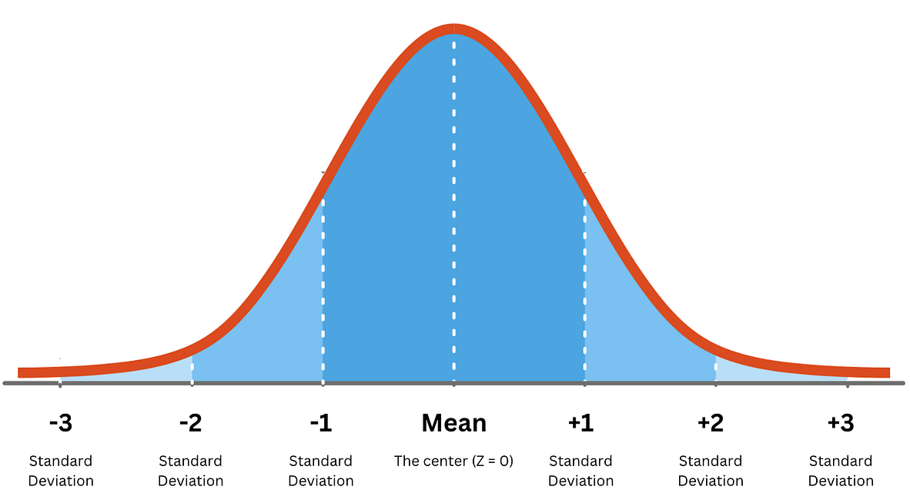
Confidence intervals
|
With 68.26% confidence the true value \(x\) lies between \(\mu - \text{SE}\lt x \lt \mu +\text{SE}\) \(\mu\) is the best estimate and \(\text{SE}\) is the standard error With 95.44% confidence the true value \(x\) lies between \(\mu - 2\text{SE}\lt x \lt \mu +2\text{SE}\) With 99.72% confidence the true value \(x\) lies between \(\mu - 3\text{SE}\lt x \lt \mu +3\text{SE}\) |

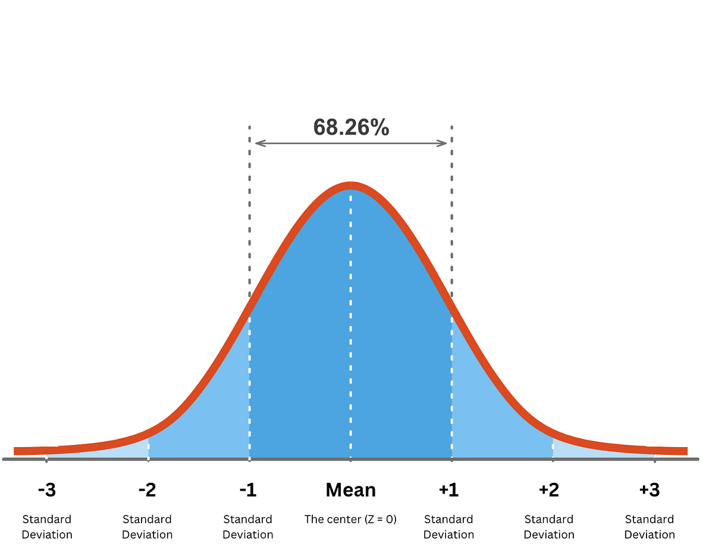 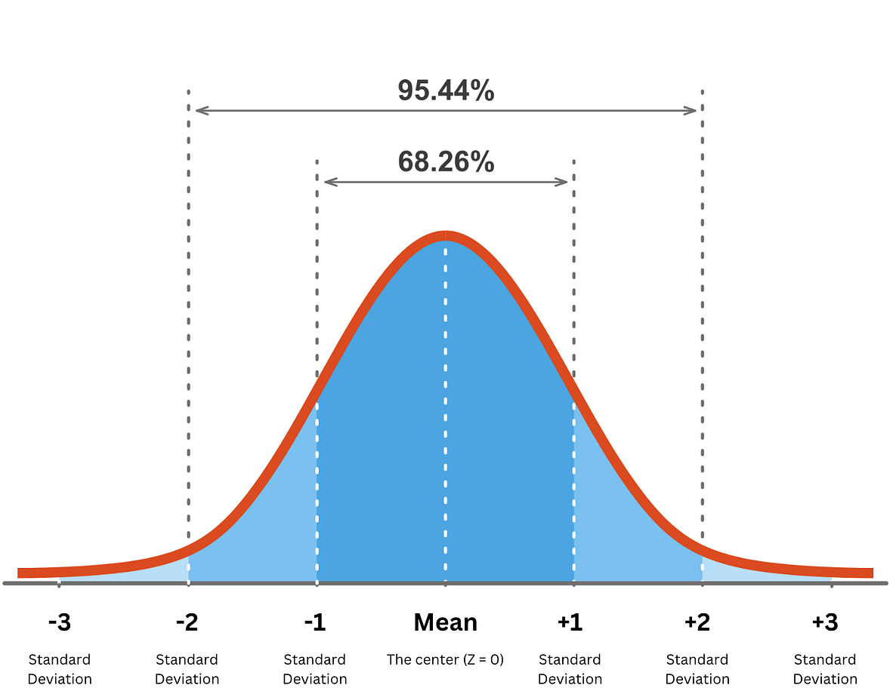 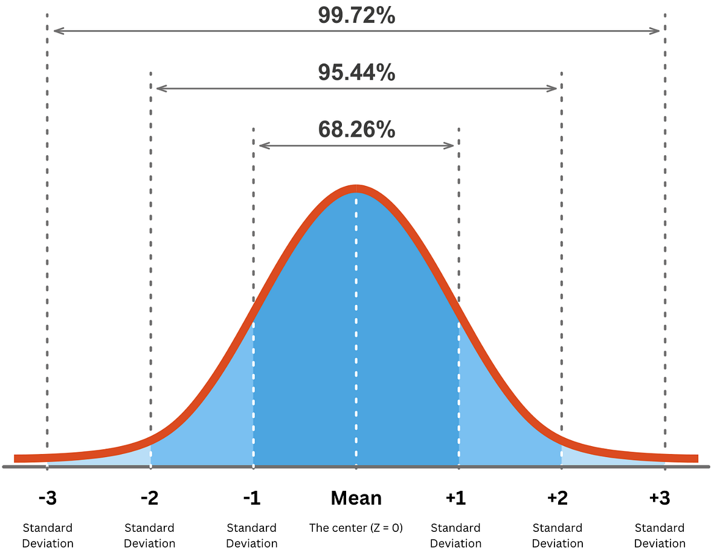 |
What if there are not so many samples? 🤔
📝 Practice 😀
|
A research study was conducted to examine the differences between older and younger adults on perceived life satisfaction. Several older adults and several younger adults were given a life satisfaction test. Scores on the test range from 0 to 60, with high scores indicative of high life satisfaction, low scores indicative of low life satisfaction. Find the best estimates and the standard errors for the life satisfaction score for the old and young adults. |
|
✨Note: Data available in your Excel file.
What if the value does not have an error?
What if the value does not have an error?
What is the difference between 12.3 and 12.30?
- 12.3 can be any number from 12.25 to 12.34 rounded to 3 s.f.
- 12.30 can be any number from 12. 295 to 12.304 rounded to 4 s.f.
Significant figures reflect the precision
to which a value is reported.
How do we do calculations with errors?
If errors are not given:
- One value - keep the same number of significant figures in calculations.
- More values - rule of s.f. — report answer to the lowest s.f. appearing in question data.
If errors are given, we must consider error propagation.
Example
Find the age of universe \(( t= 1.4 \times 10^{10}\,\text{years} )\) in weeks.
First, note that the value \(1.4 \times 10^{10}\,\text{years}\) has 2 s.f.
Now, $\,1 \,\text{year} = 52 \, \text{weeks}$ \(\;\Ra\; 1 = \dfrac{52\, \text{weeks}}{1 \,\text{year}}\)
Then $\, t = 1.4 \times 10^{10}\,\text{years}$ \( =1.4 \times 10^{10}\,\text{years} \times \dfrac{52\, \text{weeks}}{1 \,\text{year}}\)
\( =1.4 \times 52 \times 10^{10}\text{weeks}\) \( =72.8\times 10^{10}\,\text{weeks}\)
\(= 7.28\times 10^{11}\,\text{weeks}\;\;\) (it has 3 s.f.) 👈
Round it up so we consider 2 s.f. \(\rightarrow 7.3\times 10^{11}\,\text{weeks}\)
📝 Practice 😀
1. 1203 people attend a concert, and spend $74,403.20
- How many significant figures in each number?
- What is the average spend per person?
2. 1200 people attend a concert, and spend $74,000
- How many significant figures in each number?
- What is the average spend per person?
Solution - Practice 1
Given:
1203 people attend, total spend = $74,403.20
-
Significant figures:
– 1203 → 4 significant figures
– 74,403.20 → 7 significant figures (all digits including trailing zero after the decimal) -
Average spend per person:
So the average spend is $61.86 per person.
$\dfrac{74{,}403.20}{1203}$ $= 61.848046...$ $\approx 61.85$
Solution - Practice 2
Given:
1200 people attend, total spend = $74,000
-
Significant figures:
– 1200 → likely 2 significant figures (unless the zeros are shown as measured, e.g., 1200.)
– 74,000 → 2 significant figures (same reasoning) -
Average spend per person:
With 2 significant figures → $62 per person.
$\dfrac{74{,}000}{1200}$ $= 61.666...$
What will be the average if you consider $7.4\times 10^{5}$? 🤔
Error propagation - Special cases
When dealing with uncertainties based on a large collection of numbers the manipulation of measured quantities and the error associated with each quantity will contribute to the error in the final answer.
Error propagation - Special cases
The following formulae are a good approximation of the error and become increasingly accurate as the number of measurements increase or when the cross terms between the contributing errors are reasonably small.
| Process | Value | Uncertainty |
|---|---|---|
| Average | \(\bar x = \dfrac{x_1+x_2+\cdots+x_n}{n}\) | \(\Delta x = \ds \sqrt{\frac{1}{n-1}\sum_{i=1}^{n}\left(x_i-\bar{x}\right)^2}\) |
| Constant factor | \(\bar{z} = A\bar{x} ,\) with \(A\) a constant | \(\Delta z = A\Delta x \) |
| Addition / Subtraction | \(\bar{z} = A\bar{x} ± B\bar{y}\) | \(\Delta z = \sqrt{A^2\Delta x^2+B^2\Delta y^2} \) |
| Multiplication / Division | \(\bar{z} = \bar{x} \times \bar{y}\) or \(\bar{z} = \dfrac{\bar{x} }{ \bar{y}}\) | \(\Delta z = \bar{z}\sqrt{\left(\dfrac{\Delta x}{\bar{x}}\right)^2+\left(\dfrac{\Delta y}{\bar{y}}\right)^2}\) |
| Function | \(f(x)\) | \(\Delta f = \left|\dfrac{\partial f(x) }{\partial x}\right|\Delta x\) |
Error propagation for independent variables
If we have a general function of independent variables \[f\left(x_1,x_2,\cdots, x_n\right)\]
- Each variable has an error $x_i \pm \Delta x_i$
- The error of the function is
$\ds \Delta f = \sqrt{\left(\dfrac{\partial f(x) }{\partial x_1}\Delta x_1\right)^2+ \cdots+ \left(\dfrac{\partial f(x) }{\partial x_n}\Delta x_2\right)^2} $
$=\ds \sqrt{\sum_{i=1}^{n}\left(\dfrac{\partial f(x) }{\partial x_i}\Delta x_i\right)^2}\qquad \qquad \qquad $
Example - Unit conversion
A bucket contains $5.23 \pm 0.07$ of water. How many gallons it is?
👉 \(1\,\text{gallon} = 3.79\, \text{L}\)
Change units in both the value and the error!
\(\text{V} = 5.23 \,\text{L}\) \(=5.23 \,\text{L} \times \dfrac{1\,\text{gl}}{3.79\, \text{L}}\) \(=1.379947 \,\text{gl}\)
\(\Delta \text{V} = 0.07 \,\text{L}\) \(=0.07 \,\text{L} \times \dfrac{1\,\text{gl}}{3.79\, \text{L}}\) \(=0.018469 \,\text{gl}\)
Thus \(\text{V} = 1.38 \,\text{gl}\;\) and \(\;\Delta \text{V} = 0.07 \,\text{gl}\)
\(\Ra \text{V} = 1.38 \pm 0.07\,\text{gl} \)
📝 More Examples 😃
- I mix 70.0 ± 0.5 ml of water to 30.0 ± 0.4 ml of methanol. How much liquid I have?
- What is the %v/v concentration of the methanol in the mixture above?
- If I take out 15 ± 5 ml of the solution from the mixture above, how much mixture I have left?
Example 1 — Total volume
Given: water = \(70.0 \pm 0.5\, \text{ml}\), methanol = \(30.0 \pm 0.4\, \text{ml}\).
\(V_w = 70.0\, \text{ml}\;\) and \(\;V_m= 30.0\, \text{ml}\)
\(\Delta V_w = 0.5\, \text{ml}\;\) and \(\;\Delta V_m= 0.4\, \text{ml}\)
Sum (addition) — uncertainties combined in quadrature (independent errors):
\(V_{\text{tot}} = V_w + V_m \) \(= 70.0\, \text{ml}+ 30.0 \, \text{ml} \) \(= 100.0 \, \text{ml}\)
\( \Delta{V_{\text{tot}}}=\sqrt{(0.5\, \text{ml})^{2}+(0.4\, \text{ml})^{2}} \) \( =\sqrt{0.25\, \text{ml}^2+0.16\, \text{ml}^2}\)
\( =\sqrt{0.41\, \text{ml}^2} \) \( =0.64\, \text{ml}\;(\text{approx.}) \)
Hence, \(V_{\text{tot}} = 100.0 \pm 0.6\) ml.
Example 2 — % v/v methanol
Given: water = \(70.0 \pm 0.5\, \text{ml}\), methanol = \(30.0 \pm 0.4\, \text{ml}\).
\(V_w = 70.0\, \text{ml}\;\) and \(\;V_m= 30.0\, \text{ml}\) - \(\Delta V_w = 0.5\, \text{ml}\;\) and \(\;\Delta V_m= 0.4\, \text{ml}\)
Fraction of methanol: \(\displaystyle f = \frac{V_m}{V_{\text{tot}}}\) \(\displaystyle =\frac{30.0\, \text{ml}}{100.0\, \text{ml}} \times 100\%\) \(\displaystyle=30\%\).
Propagate uncertainty using partial derivatives
(since \(V_m\) appears in
numerator and
denominator):
\(\ds f=\frac{V_m}{V_w+V_m},\quad \) \(\ds \frac{\partial f}{\partial V_m}=\frac{V_w}{(V_w+V_m)^2},\quad\) \(\ds \frac{\partial f}{\partial V_w}=-\frac{V_m}{(V_w+V_m)^2} \)
Evaluate at \(V_w=70.0,\ V_m=30.0\):
\( \ds \Delta f=\sqrt{\left( \tfrac{70}{100^2}\cdot 0.4 \right)^2 + \left( \tfrac{30}{100^2}\cdot 0.5 \right)^2} \) \( \ds \approx 0.00318 \)
Example 2 — % v/v methanol
Given: water = \(70.0 \pm 0.5\, \text{ml}\), methanol = \(30.0 \pm 0.4\, \text{ml}\).
\(V_w = 70.0\, \text{ml}\;\) and \(\;V_m= 30.0\, \text{ml}\) - \(\Delta V_w = 0.5\, \text{ml}\;\) and \(\;\Delta V_m= 0.4\, \text{ml}\)
Fraction of methanol: \(\displaystyle f = \frac{V_m}{V_{\text{tot}}}\) \(\displaystyle =\frac{30.0\, \text{ml}}{100.0\, \text{ml}} \times 100\%\) \(\displaystyle=30\%\).
\( \ds \Delta f=\sqrt{\left( \tfrac{70}{100^2}\cdot 0.4 \right)^2 + \left( \tfrac{30}{100^2}\cdot 0.5 \right)^2} \) \( \ds \approx 0.00318 \)
Uncertainty as percentage:
\(0.00318\times100\approx0.318\%\),
round sensibly to one significant figure in the
uncertainty → \(0.3\%\).
Therefore, Methanol = \(30.0\pm 0.3\, \%\) (%v/v).
Example 3 — Mixture remaining after removing part
We remove \(15 \pm 5 \, \text{ml}\) from the total \(100.0 \pm 0.64 \, \text{ml}\).
Remaining volume:
\( R = V_{\text{tot}} - V_{\text{removed}} \) \( = 100.0\, \text{ml} - 15.0 \, \text{ml} \) \( = 85.0 \, \text{ml}\)
Subtraction - Independent errors → quadrature:
\(\Delta R=\sqrt{0.64^2\, \text{ml}^2 + 5.0^2\, \text{ml}^2} \) \(=\sqrt{0.4096\, \text{ml}^2+25\, \text{ml}^2} \)
\(=5.04\, \text{ml}\ (\text{approx.}) \)
Round uncertainty to one significant figure → \(5\). Align value to same precision.
Thus, the remaining mixture \(\,= 85 \pm 5\, \text{ml}\) .
Example 4 — How much methanol is left?
Methanol fraction from (2): \(f = 0.300 \pm 0.00318\, \text{ml}\).
Remaining volume from (3): \(R = 85.0 \pm 5.04\, \text{ml}\)
Amount of methanol left: \[ M_{\text{left}} = f\cdot R = 0.300\times 85.0 = 25.5 \]
Propagate uncertainty for product (treating \(f\) and \(R\) as independent here):
\[ \sigma_{M}=\sqrt{(R\,\sigma_f)^2 + (f\,\sigma_R)^2} =\sqrt{(85\cdot 0.00318)^2 + (0.300\cdot 5.04)^2} \approx 1.54 \]
Uncertainty has leading digit 1 → keep two significant figures → \(1.5\). Align value precision to one decimal.
Answer: Methanol left ≈ \(25.5 \pm 1.5\) (same units).
Summary, how to deal with errors
Where they come from?
- Sometimes given
- Calculated from data
- Estimated from precision
- Estimated from context
How to propagate them?
- Keep the same number of s.f.
- Use the Rule of s.f. - report answer to lowest s.f. appearing in data
Summary, reporting the values
- Do not over report significance - it will affect the precision of reported value
- Be careful with trailing zeros, use scientific notation for clarity, carefully consider the context
- Use full accuracy for calculations but report the right number of significant figures
Correlation
Correlation
Measures the relationship between two, or more variables, indicating how they change together.
It is used to understand the relationship between variables.
📈 Positive Correlation
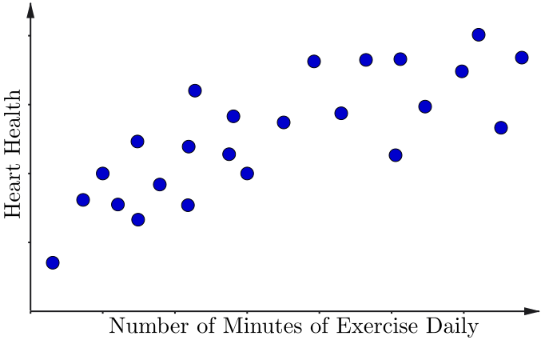
📉 Negative Correlation
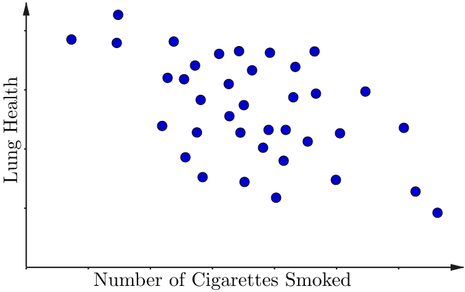
❌ Weak/No Correlation
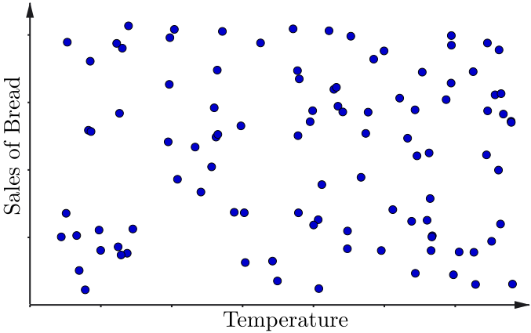
Correlation Coefficient
To measure correlation between variables we use the formula:
|
\(r = \frac{\displaystyle\sum_{i=1}^{n} (x_i - \bar{x})(y_i - \bar{y})} {\sqrt{\displaystyle\sum_{i=1}^{n} (x_i - \bar{x})^2} \sqrt{\displaystyle\sum_{i=1}^{n} (y_i - \bar{y})^2}}\) |
Correlation Coefficient
|
\(r = \frac{\displaystyle\sum_{i=1}^{n} (x_i - \bar{x})(y_i - \bar{y})} {\sqrt{\displaystyle\sum_{i=1}^{n} (x_i - \bar{x})^2} \sqrt{\displaystyle\sum_{i=1}^{n} (y_i - \bar{y})^2}}\) In Excel we use the function: =CORREL(A1:A10,B1:B10) |
|
⚠️ Correlation $\neq$ Causation
|
🍦 |
Sales of Ice cream |
| No. of people getting ☀️ sun burn |
🥵 |
⚠️ Correlation $\neq$ Causation
|
🍦 |
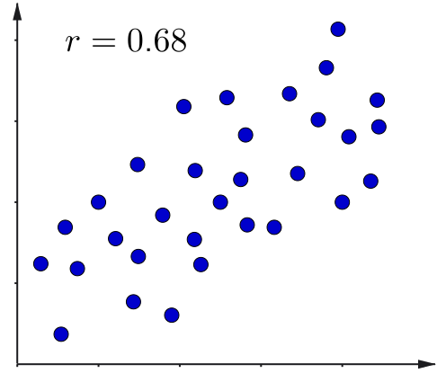 |
|
🥵 |
⚠️ Correlation $\neq$ Causation
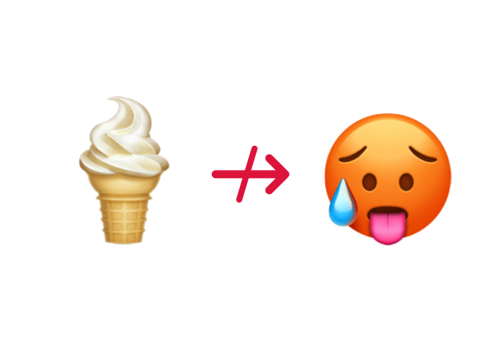
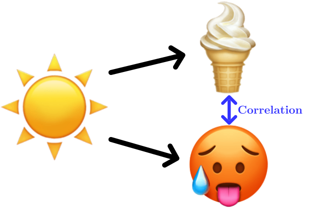
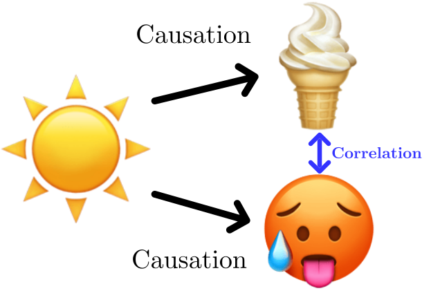
Ice cream is not causing sun burn‼️
We must consider an external factor: The Sun ☀️
The Sun ☀️ might be increasing the sales of ice cream
and also sun burns on people.
⚠️ Correlation $\neq$ Causation
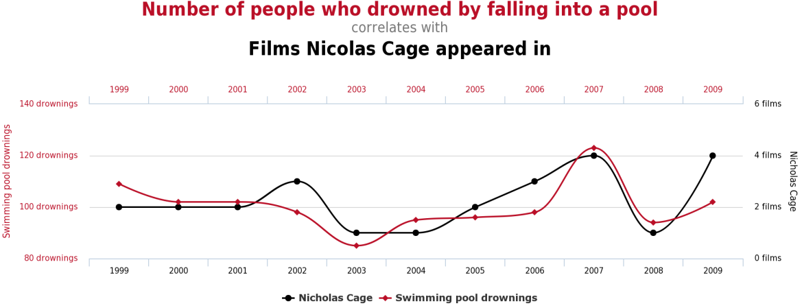
Statistical Analysis: Warning! ⚠️

"Don't rely solely on summary statistics—always visualise your data."
Source: Same Stats, Different Graphs
That's all for today!
See you in Week 4!